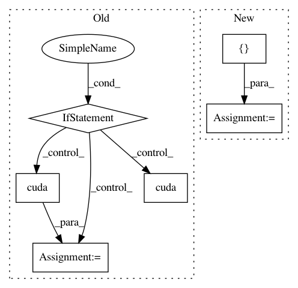

1db4255e8b19a322434fa2fce398b73b5757f764,examples/1d/compute_speed.py,,,#,19
Before Change
// -----------------------------
// If we"re using the this backend, only compute the benchmark on the GPU.
if backend.NAME == "skcuda":
device = "gpu"
fmt_str = "==> Testing Float32 with Skcuda backend, on {}, forward"
print(fmt_str.format(device.upper()))
scattering.cuda()
x_data = x_data.cuda()
torch.cuda.synchronize()
t_start = time.time()
for _ in range(times):
scattering(x_data)
torch.cuda.synchronize()
t_elapsed = time.time() - t_start
fmt_str = "Elapsed time: {:2f} [s / {:d} evals], avg: {:.2f} (s/batch)"
print(fmt_str.format(t_elapsed, times, t_elapsed/times))
After Change
if backend.NAME == "torch":
devices = ["cpu", "gpu"]
elif backend.NAME == "skcuda":
devices = ["gpu"]
//////////////////////////////////////////////////////////////////////////////////////////////////////////////////////////////////////////////////////////////
// Create the `Scattering1D` object using the given parameters and generate
// some compatible test data with the specified batch size.
scattering = Scattering1D(T, J, Q)
x = torch.randn(batch_size, 1, T, dtype=torch.float32)
//////////////////////////////////////////////////////////////////////////////////////////////////////////////////////////////////////////////////////////////
// Run the benchmark
// -----------------
// For each device, we need to convert the `scattering` object and the Tensor
// `x` to the appropriate type, invoke `times` calls to the `scattering.forward`
// and print the running times. If the benchmark is running on the GPU, we also
// need to call `torch.cuda.synchronize()` before and after the benchmark to
// make sure that all CUDA kernels have finished executing.
for device in devices:
fmt_str = "==> Testing Float32 with {} backend, on {}, forward"
print(fmt_str.format(backend.NAME, device.upper()))
if device == "gpu":
scattering.cuda()
x = x.cuda()
else:
scattering.cpu()
x = x.cpu()
if device == "gpu":
torch.cuda.synchronize()
t_start = time.time()
for _ in range(times):
scattering.forward(x)
if device == "gpu":
torch.cuda.synchronize()
t_elapsed = time.time() - t_start
fmt_str = "Elapsed time: {:2f} [s / {:d} evals], avg: {:.2f} (s/batch)"
print(fmt_str.format(t_elapsed, times, t_elapsed/times))
//////////////////////////////////////////////////////////////////////////////////////////////////////////////////////////////////////////////////////////////
// The resulting output should be something like
//
// .. code-block:: text
In pattern: SUPERPATTERN
Frequency: 3
Non-data size: 6
Instances
Project Name: kymatio/kymatio
Commit Name: 1db4255e8b19a322434fa2fce398b73b5757f764
Time: 2018-11-21
Author: janden@flatironinstitute.org
File Name: examples/1d/compute_speed.py
Class Name:
Method Name:
Project Name: rusty1s/pytorch_geometric
Commit Name: b44364811b14bde01d84554624a9bffa0e4976e3
Time: 2018-03-07
Author: matthias.fey@tu-dortmund.de
File Name: examples/cora_gcn.py
Class Name:
Method Name:
Project Name: kentsommer/pytorch-value-iteration-networks
Commit Name: 2205fce8ac9f1d9f01f81996f7deef9a7b197a8d
Time: 2020-10-01
Author: 16188477+shuishida@users.noreply.github.com
File Name: test.py
Class Name:
Method Name: main